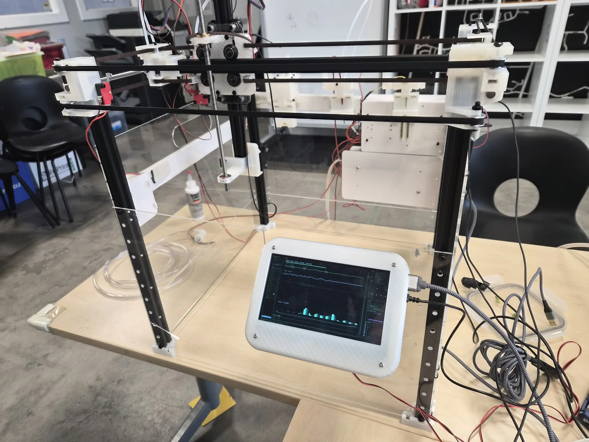

01 · Product Development
Farmtron Automated Farming Platform
Three generations of a CoreXY agricultural robot with custom electronics, optical tool docking, a Linux operating environment, remote control, and AI-assisted operation.
View Farmtron project report →Launch browser simulator